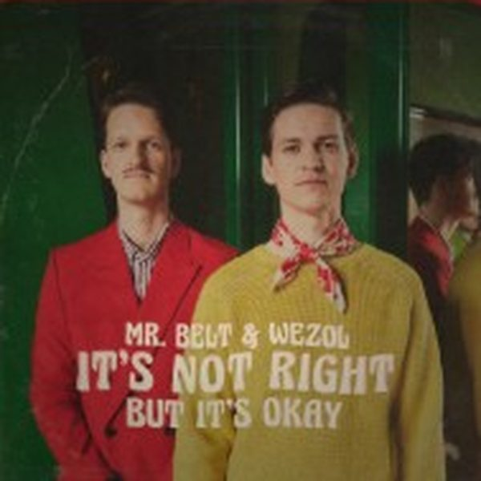

I 18 dischi

1 It's Not Right (But It's Ok)Mr. Belt & Wezol 2
Without Your LoveDeorro x TELYKAST x Catello
2
Without Your LoveDeorro x TELYKAST x Catello
 3
The AfterhoursKyle Watson
3
The AfterhoursKyle Watson
 4
Snare ThingMatt Sassari & Tony Romera
4
Snare ThingMatt Sassari & Tony Romera
 5
Freed from DesireDario Nunez, Victor Perez & Vicente Ferrer
5
Freed from DesireDario Nunez, Victor Perez & Vicente Ferrer
 6
Turn Me OnGabry Ponte,Damante
6
Turn Me OnGabry Ponte,Damante
 7
DaleSan Pacho & Teko
7
DaleSan Pacho & Teko
 8
I Like It€URO TRA$H & Almanac
8
I Like It€URO TRA$H & Almanac
 9
Papi Dale Duro (RKN Extended)Nicola Fasano, Salento Guys, Pippo Bravo
9
Papi Dale Duro (RKN Extended)Nicola Fasano, Salento Guys, Pippo Bravo
 10
Dola re DolaMEDUZA, Varun Jain
10
Dola re DolaMEDUZA, Varun Jain
 11
Riverside MFJoel Corry x Sidney Samson x Pajane
11
Riverside MFJoel Corry x Sidney Samson x Pajane
 12
The VolumeFred Pellichero
12
The VolumeFred Pellichero
 13
Clap Your FeetDuck Sauce, A-Trak & Armand Van Helden
13
Clap Your FeetDuck Sauce, A-Trak & Armand Van Helden
 14
Time For ThatMorganJ
14
Time For ThatMorganJ
 15
DuroAntho Decks, Andrea Satta
15
DuroAntho Decks, Andrea Satta
 16
SkipSebastian Ingrosso & Steve Angello
16
SkipSebastian Ingrosso & Steve Angello
 17
Outta My HeadTW3LV & Zhiko
17
Outta My HeadTW3LV & Zhiko
 18
Tu TuTECH IT DEEP & Chico Rose
18
Tu TuTECH IT DEEP & Chico Rose
La tracklist
- 1 It's Not Right (But It's Ok) Mr. Belt & Wezol Sony Music
- 2 Without Your Love Deorro x TELYKAST x Catello Armada Music
- 3 The Afterhours Kyle Watson Defected Records
- 4 Snare Thing Matt Sassari & Tony Romera Tomorrowland Music
- 5 Freed from Desire Dario Nunez, Victor Perez & Vicente Ferrer SOLEADO RECORDINGS
- 6 Turn Me On Gabry Ponte,Damante Cr2 Records
- 7 Dale San Pacho & Teko Terminal Underground
- 8 I Like It €URO TRA$H & Almanac Confession Records
- 9 Papi Dale Duro (RKN Extended) Nicola Fasano, Salento Guys, Pippo Bravo Soave Dusk
- 10 Dola re Dola MEDUZA, Varun Jain Universal-Island Records
- 11 Riverside MF Joel Corry x Sidney Samson x Pajane Musical Freedom
- 12 The Volume Fred Pellichero Hexagon
- 13 Clap Your Feet Duck Sauce, A-Trak & Armand Van Helden Defected Records
- 14 Time For That MorganJ Confession Records
- 15 Duro Antho Decks, Andrea Satta Toolroom Records
- 16 Skip Sebastian Ingrosso & Steve Angello SUPERHUMAN MUSIC
- 17 Outta My Head TW3LV & Zhiko Bang Record
- 18 Tu Tu TECH IT DEEP & Chico Rose TECH IT DEEP